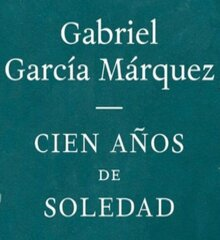
Cien años de soledad es una novela del escritor colombiano Gabriel García Márquez Leer más
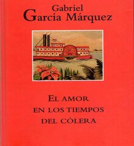
El amor en los tiempos del cólera es una novela del escritor colombiano Gabriel García Márquez, publicada en 1985.
Leer más
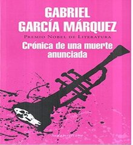
Crónica de una muerte anunciada es una novela del escritor colombiano Gabriel García Márquez.
Leer más
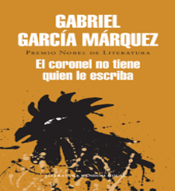
El coronel no tiene quien le escriba es una novela del escritor colombiano Gabriel García
Leer más
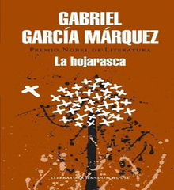
La hojarasca es una novela corta escrita por Gabriel García Márquez, publicada en 1955.
Leer más
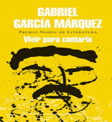
Vivir para contarla es el primero de tres volúmenes de relatos.
Leer más
Obras Reconocidas del Autor
| Nombre de la Obra | Año | Autor | Idioma |
| Memoria de mis Putas Tristes | 2004 | Gabriel Garcia Marquez | Español |
| Relato de un naufrago | 1970 | Gabriel Garcia Marquez | Español |
| El otoño del Patriarca | 1975 | Gabriel Garcia Marquez | Español |
| Del Amor y Otros Demonios | 1994 | Gabriel Garcia Marquez | Español |
| Doce Cuentos peregrinos | 1992 | Gabriel Garcia Marquez | Español |
| Los Funerales de la mama grande | 1962 | Gabriel Garcia Marquez | Español |
| Noticia de un Secuetro | 1996 | Gabriel Garcia Marquez | Español |
| La Mala Hora | 1962 | Gabriel Garcia Marquez | Español |
| El General en su Laberinto | 1996 | Gabriel Garcia Marquez | Español |
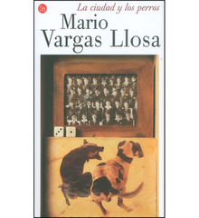
La ciudad y los perros es la primera novela del escritor peruano Mario Vargas Llosa
Leer más
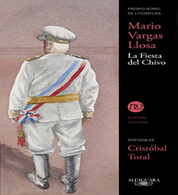
La fiesta del Chivo es una novela publicada en el año 2000 del escritor peruano
Leer más
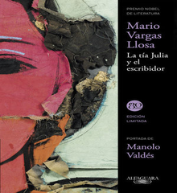
La tía Julia y el escribidor es una novela semiautobiográfica del escritor peruano Mario Vargas Llosa
Leer más
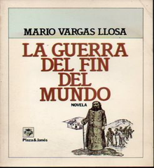
La guerra del fin del mundo es la sexta novela del escritor peruano y Nobel en el 2010.
Leer más
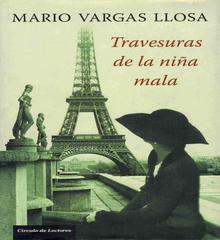
Travesuras de la niña mala es una novela del escritor peruano y Premio Nobel de Literatura en 2010.
Leer más
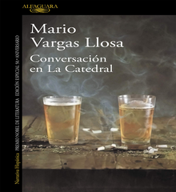
Conversación en La Catedral es la tercera novela del autor peruano Mario Vargas Llosa.
Leer más
Obras Reconocidas del Autor
| Nombre de la Obra | Año | Autor | idioma |
| La casa Verde | 1966 | Jorge Mario Vargas LLosa | Español |
| El Hablador | 1987 | Jorge Mario Vargas LLosa | Español |
| Lituma En Los Andes | 1993 | Jorge Mario Vargas LLosa | Español |
| El Sueño de Celta | 2010 | Jorge Mario Vargas LLosa | Español |
| Pantaleón y Las visitadores | 1973 | Jorge Mario Vargas LLosa | Español |
| El Paraiso en otra Esquina | 2003 | Jorge Mario Vargas LLosa | Español |
| El Heroe Discreto | 2013 | Jorge Mario Vargas LLosa | Español |
| El pez en el Agua | 1993 | Jorge Mario Vargas LLosa | Español |
| Los Cuadernos de Don Rigoberto | 1997 | Jorge Mario Vargas LLosa | Español |
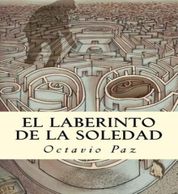
El laberinto de la soledad es un ensayo publicado en 1950 por el escritor mexicano Octavio Paz.
Leer más
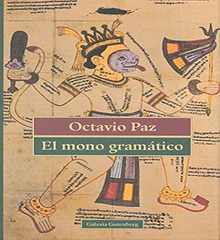
A la vez vasta reflexión y poema en prosa, El Mono Gramático es una de las obras más importantes de Octavio Paz
Leer más
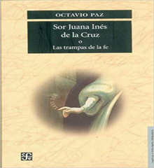
Sor Juana Inés de la Cruz o las trampas de la fe, un ensayo publicado por Octavio Paz en 1982.
Leer más
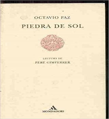
Piedra de sol es un poema escrito por Octavio Paz incluido en su poemario Libertad bajo palabra.
Leer más
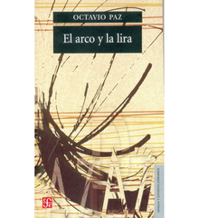
Las reflexiones de Octavio Paz sobre el fenómeno poético, su lugar en la historia.
Leer más
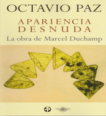
la obra de marcel duchamp. Compartir: Octavio Paz, uno de los mayores poetas del siglo XX.
Leer más
Obras Reconocidas del Autor
| Nombre de la Obra | Año | Autor | idioma |
| Selected Poems | 1963 | Octavio Irineo Paz Lozano | Español - Ingles |
| Convergencias | 1987 | Octavio Irineo Paz Lozano | Español |
| Conjunciones y Disyunciones | 1969 | Octavio Irineo Paz Lozano | Español |
| Arbol Adentro | 1987 | Octavio Irineo Paz Lozano | Español |
| The Labyrinth of Solitude: The Other Mexico | 1985 | Octavio Irineo Paz Lozano | Ingles |
| Posdata | 1970 | Octavio Irineo Paz Lozano | Español |
| Libertad Bajo La Palabra | 1960 | Octavio Irineo Paz Lozano | Español |
| Piedra y Sol: Poemas Elegidos | 1962 | Octavio Irineo Paz Lozano | Español |
| La otra Voz: Poesia y Fin de Siglo | 1990 | Octavio Irineo Paz Lozano | Español |